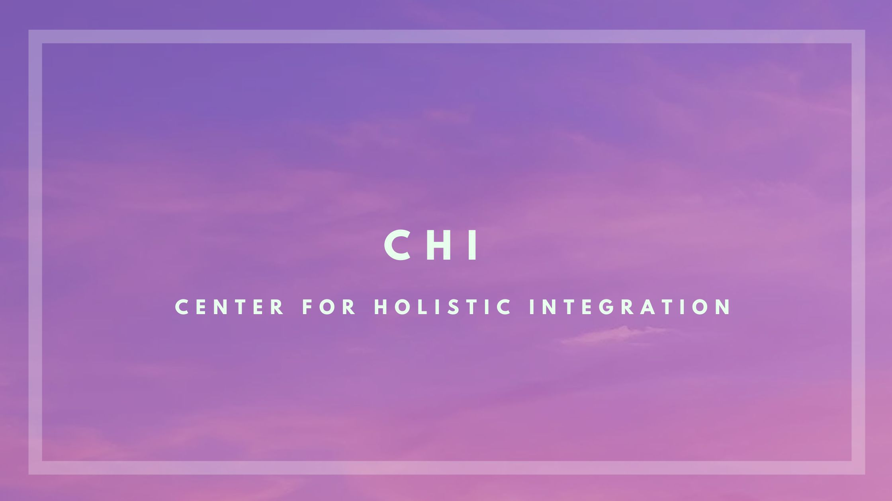

Merging paths converge Skills weave an intertwined tale CHI reflects, then grows
This is the home page where we share everything about our team, our vision, and how we engage with students. Feel free to explore the site and learn more about what we do.
The Center for Holistic Integration (CHI) at City Tech promotes the transformative potential of interdisciplinary collaboration and meta-integrative activities, empowers student engagement, and produces tangible outcomes in academic, artistic, and commercial environments. Our mission is to explore the interconnectedness of knowledge, disciplines, and cultures; transition integration from a tool to a meaningful, ambitious goal; and so create a dynamic academic landscape that connects the many disciplines our students study. CHI envisions a future where interdisciplinary and meta-disciplinary collaborations become central to academic growth and transcend traditional barriers of siloed knowledge. We aspire to contribute to an academic landscape that does not just mirror, but actively enhances, the dynamic interplay of ideas and disciplines in our multifaceted world, and thus help to foster a thriving, interconnected community of lifelong learners.
We consider integration to be CHI's organizing principle. Integration is a powerful tool that has been deployed to unify parts into a cohesive whole, focusing on harmonious collaboration to produce meaningful outcomes. For example, at an academic institution, integration is used to organize the multiple individual courses offered by academic departments into degree programs, ensuring students are adept and qualified across a range of competencies at graduation, but without sacrificing the academic integrity of the individual courses. Integration's power as a tool is unquestioned. At CHI, our philosophy is to turn integration around: instead of a tool to achieve a goal, we consider integration to be the goal in itself. As a corollary we look to examine the use of integration as large a scope
At CHI, meta-integration takes integration a step further. It seeks ways to merge existing academic and practical activities without altering their original objectives or results. Imagine a degree program that culminates in a project and/or an internship; meta-integration would align such culminating experiences with CHI-supported projects. This means an architect, a programmer, a chef, or a marketing student could lend their unique skills and knowledge to these projects, simultaneously fulfilling their academic requirements and contributing to broader, inter-disciplinary objectives. It's the art of strategically combining multiple integrations to create richer, more multifaceted outcomes.
contact:
adelilkan@citytech.cuny.edu or dsmith@citytech.cuny.edu
Find us in Room LG-038!